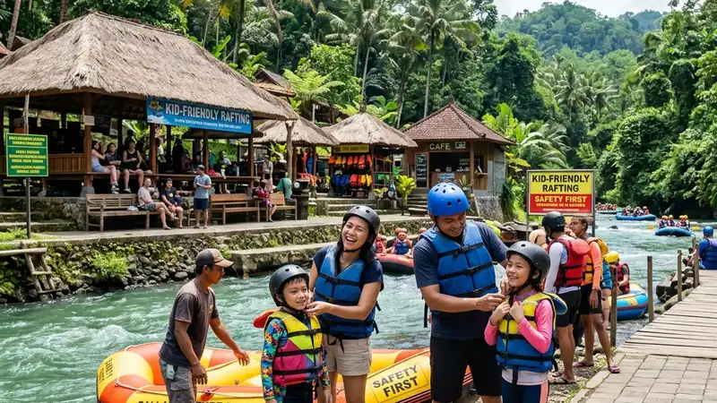

Wisata rafting anak adalah destinasi arung jeram yang dirancang dengan jalur sungai landai, fasilitas pendukung lengkap, dan kebijakan operasional yang mengutamakan keselamatan peserta usia anak selama kegiatan berlangsung.
- Wisata rafting anak sebaiknya dipilih berdasarkan grade jeram, reputasi operator, dan kelengkapan fasilitas pendukung.
- Fasilitas seperti ruang ganti, toilet, dan area tunggu memengaruhi kenyamanan keluarga selama kunjungan.
- Aksesibilitas lokasi dari titik kumpul turut memengaruhi kelayakan destinasi untuk anak.
- Ulasan dan testimoni pengunjung sebelumnya membantu menilai kualitas layanan destinasi.
- Musim dan kondisi debit air memengaruhi waktu terbaik mengunjungi destinasi wisata rafting anak.
Apa Saja Kriteria Wisata Rafting Anak yang Ramah Keluarga?
Kriteria wisata rafting anak yang ramah keluarga meliputi jalur sungai bergrade rendah, ketersediaan perlengkapan ukuran anak, rasio pemandu yang memadai, dan fasilitas pendukung yang lengkap di area destinasi.
- Grade jeram rendah hingga menengah. Destinasi yang cocok untuk anak umumnya menggunakan segmen sungai dengan tingkat kesulitan grade satu hingga tiga.
- Reputasi dan legalitas operator. Destinasi yang dikelola operator berizin dan tergabung dalam asosiasi wisata arung jeram cenderung lebih konsisten menerapkan standar keselamatan.
- Ketersediaan perlengkapan berukuran anak. Pelampung dan helm dengan ukuran yang sesuai menjadi indikator kesiapan destinasi menerima peserta anak.
- Rasio pemandu terhadap peserta. Destinasi yang menyediakan pemandu ekstra untuk kelompok bersama anak menunjukkan komitmen terhadap keselamatan.
Fasilitas Apa Saja yang Perlu Tersedia di Lokasi Wisata Rafting Anak?
Fasilitas penting di lokasi wisata rafting anak meliputi ruang ganti, toilet bersih, area istirahat teduh, serta akses jalan yang mudah dijangkau dari titik parkir menuju area start pengarungan.
Selain fasilitas dasar tersebut, destinasi yang benar-benar ramah keluarga biasanya juga menyediakan area tunggu bagi anggota keluarga yang tidak ikut rafting, warung atau kantin sederhana, serta petugas yang siap membantu proses registrasi dan pemasangan perlengkapan. Ketersediaan fasilitas pendukung ini turut menentukan tingkat kenyamanan keluarga selama menunggu giliran maupun setelah kegiatan selesai.
Bagaimana Cara Menilai Apakah Destinasi Rafting Cocok untuk Anak?
Cara menilai kecocokan destinasi rafting untuk anak meliputi memeriksa kebijakan usia minimal, membaca ulasan pengunjung sebelumnya, serta menghubungi langsung operator untuk menanyakan detail jalur dan protokol keselamatan yang diterapkan.
Sebelum memutuskan, orang tua disarankan menghubungi pihak destinasi untuk menanyakan hal-hal spesifik seperti kebijakan usia dan berat badan minimal, ketersediaan perlengkapan ukuran anak, serta prosedur yang diterapkan apabila kondisi cuaca berubah mendadak saat kegiatan berlangsung. Ulasan dari keluarga lain yang pernah berkunjung juga dapat menjadi bahan pertimbangan penting, terutama terkait pengalaman nyata mereka membawa anak ke destinasi tersebut.
Kapan Waktu Terbaik Mengunjungi Wisata Rafting Anak?
Waktu terbaik mengunjungi wisata rafting anak umumnya pada musim kemarau ketika debit air sungai lebih stabil dan risiko arus deras akibat hujan lebat dapat diminimalkan.
Pada musim hujan, debit air sungai cenderung meningkat dan lebih sulit diprediksi, sehingga sebagian operator memilih menunda atau membatalkan jadwal rafting demi keselamatan peserta, khususnya anak-anak. Keluarga yang berencana mengunjungi destinasi wisata rafting anak sebaiknya memantau kondisi cuaca dan berkoordinasi dengan operator beberapa hari sebelum jadwal kunjungan.
Berdasarkan pengamatan umum terhadap pola kunjungan wisata petualangan air di kawasan Jawa Timur pada periode 2023-2025, kunjungan keluarga ke destinasi rafting ramah anak cenderung meningkat pada musim liburan sekolah, mendorong sejumlah operator menambah kapasitas pemandu pada periode tersebut.
Untuk memahami persiapan yang perlu dilakukan sebelum mengajak anak mencoba kegiatan ini, artikel rafting anak membahas secara mendalam mengenai usia minimal dan perlengkapan keselamatan. Panduan umum mengenai konsep rafting bersama keluarga dapat dibaca pada artikel rafting keluarga.
FAQ
Apakah semua destinasi rafting menyediakan paket khusus untuk anak?
Tidak semua destinasi menyediakan paket khusus anak, sehingga penting bagi orang tua untuk menanyakan langsung ketersediaan layanan tersebut sebelum melakukan pemesanan.
Apakah wisata rafting anak selalu lebih mahal dari paket reguler?
Harga paket wisata rafting anak dapat bervariasi dan tidak selalu lebih mahal, tergantung pada fasilitas tambahan, rasio pemandu, dan jarak jalur yang digunakan.
Apa yang perlu dibawa saat berkunjung ke destinasi wisata rafting anak?
Keluarga disarankan membawa pakaian ganti, alas kaki tertutup untuk air, serta tabir surya, sementara perlengkapan keselamatan utama umumnya sudah disediakan oleh pihak destinasi.
Arya
Penulis artikel yang sudah berpengalaman di dalam dunia wisata outbound Batu Malang.